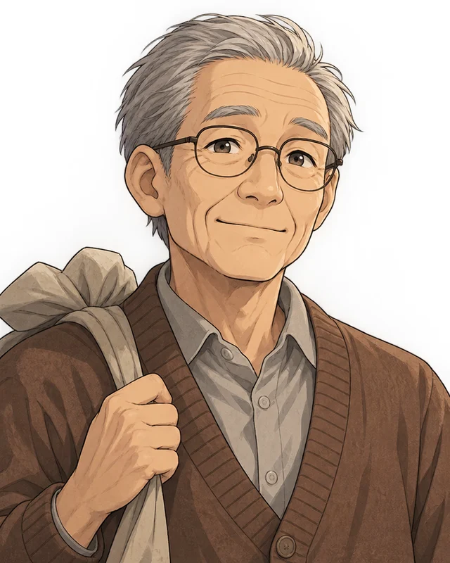
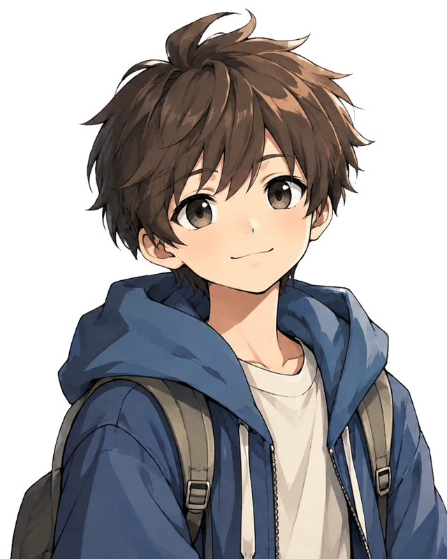
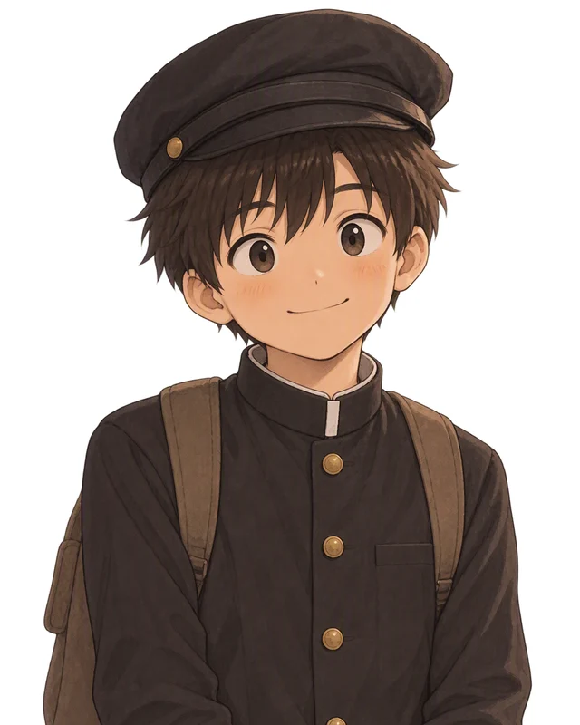
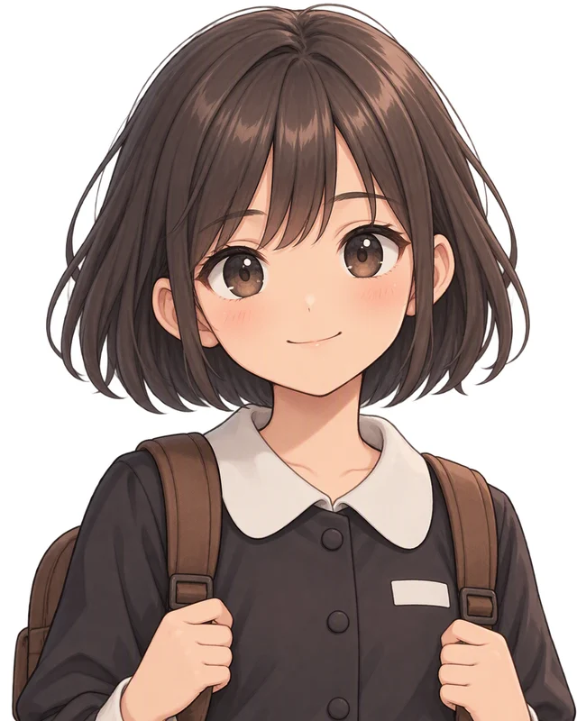

현재
할아버지백금동
치매로 가족의 얼굴과 이름조차 자주 잊는 요양원의 노인이다. 소중한 사람들이 먼저 세상을 떠난 아픔 때문에 기억을 감춰 두었다가, 결국 그 기억의 단서마저 잊고 말았다. 손자와 함께 여러 기억의 단서를 따라가며 부모님과 아내(이금순)에 대한 기억을 하나씩 되찾는다.
게임을 하기 전에 답사지를 미리 알아 두면 훨씬 유용합니다. 카드를 넘기거나 아래 목록에서 장소를 골라 보세요.
답사지의 위치와 이동 경로를 위성 지도로 볼 수 있어요. 지도 위 노란색·초록색·파란색 표시를 누르면 게임에서 어떻게 다루는지 간단히 알려 드려요.
부산은 한국전쟁 중 1,023일 동안 피란수도의 역할을 한 도시예요. 이 역사를 인류가 함께 지켜야 할 유산으로 인정받기 위해, 「한국전쟁기 피란수도 부산의 유산」의 유네스코 세계유산 등재를 추진하고 있어요.
전쟁 속에서도 국가 기능을 이어 간 피란수도의 모습, 피란민의 삶의 현장, 전시 경제활동, 국제 원조와 연대의 이야기를 담고 있어요. 게임에서 만나는 아미동 비석마을, 부산항, 우암동 소막마을도 이 유산에 포함돼요.
구성 유산과 일정은 추진 과정에서 바뀔 수 있어요. 최신 소식은 공식 홈페이지에서 확인해 보세요.
치매로 과거의 기억을 잃어가는 할아버지는 손수건과 TV 속 피란수도 부산 이야기를 계기로 어린 시절의 기억을 조금씩 떠올린다. 북에서 피란 와 일본인 공동묘지에 터를 잡고 살았다는 단서를 얻은 손자는 할아버지의 잃어버린 인생과 소중한 사람들의 흔적을 찾기 위해 아미동 비석마을로 함께 떠나기로 한다.
표시된 장소를 누르면 답사지 카드뉴스를 볼 수 있어요.
TV에서 본 단서로 손자와 할아버지는 아미동 비석마을을 찾는다. 우물가에서 만난 100세 할머니는 부산역 대화재로 집을 잃고 이곳에 왔다고 한다. 6·25 전쟁으로 인한 피란 시절에는 물이 부족해 우물에 수백 명이 줄을 섰고 꿀꿀이죽으로 끼니를 이었다는 이야기를 듣자, 할아버지는 피란 시절의 고생을 조금씩 떠올린다.
이어서 마을 주민 최덕삼에게 화장실 옆 깨진 비석이 어린 시절 자신이 귀신에 놀라 달아나다 깨뜨린 것임을 듣고, 대성사에서 비석에 담긴 영혼의 성불을 비는 기도를 올린다. 이후 문화유산 해설사가 비석 조각 5개를 찾아 복원해 달라고 부탁한다.
복원하는 동안 할아버지는 묘지 위에 부모님과 함께 집을 짓고 살던 기억을 되찾는다. 그렇게 가족의 모습을 떠올린 할아버지는 아버지가 바다를 바라보던 모습과 뱃고동 소리가 떠올라, 두 사람은 부산항으로 향한다.
표시된 장소를 누르면 답사지 카드뉴스를 볼 수 있어요.
뱃고동 소리를 따라 부산항에 간 손자는 일손이 부족한 인부를 도와 짐을 나른다. 땀에 젖은 손자의 거친 손을 보던 할아버지는 어린 시절 아버지를 따라 하역 일을 거들던 기억을 떠올린다. 아버지가 가족을 위해 부산항에서 하역 작업을 하고, 임금을 제때 받지 못해도 다시 일터로 나갔다는 사실을 기억해 낸다.
또한 손자가 바다에서 건진 장갑을 통해 어머니가 아버지의 손이 다칠까봐 사 준 장갑을 기억해낸다. 이에 할아버지의 기억은 40계단으로 향했다. 40계단의 설명을 듣던 손자는 출출해지기 시작했고, 둘은 함께 국제시장에 가서 국밥을 먹는다.
둘은 국제시장 국밥집 사장에게 국제시장에 대한 이야기를 듣고, 준공기념비의 내용을 알게 되면서 어머니에 대한 기억을 떠올린다. 1953년 국제시장 대화재로 어머니의 가게가 불에 탔다는 사실을 떠올리고, 옆 가게 친구분이 화재에 휘말려 돌아가신 일을 기억해 낸다.
할아버지는 웃음을 잃은 어머니를 위해 부산항에서 번 돈으로 비녀를 사 드렸고, 그 비녀를 함께 골라 준 사람이 훗날의 할머니였다는 기억을 하게 된다.
표시된 장소를 누르면 답사지 카드뉴스를 볼 수 있어요.
할머니와의 첫 만남을 이야기하는 할아버지는 15살 때의 기억을 회상한다. 할아버지는 피란 시절 당시 공부를 하려면 천막 학교로 가야했다. 친구 유상철에게 전쟁 중 교실이 부족해 천막과 전차, 야외 등에서도 수업을 이어 간다는 설명을 듣는다.
어린 할아버지는 필요한 교과서를 얻은 뒤 부족한 외국어 책을 구하러 보수동에 가고, 같은 책을 잡은 소녀(할머니 이금순)에게 책을 양보한다. 다음 날 어린 할아버지는 외국어 책을 다시 구하기 위해 책방골목에 가서, 소녀를 다시 만났고 이후 둘은 서로 가까워진다.
한 달 뒤 둘은 데이트를 위해 간 광복동 밀다원 다방에서 주인이 내준 우유를 마시며, 다방 안에서 전쟁 중에도 글과 그림을 이어 가는 예술가들을 본다. 그날 소녀는 가족이 우암동(적기) 피란민 수용소로 가게 되었다고 알린다. 어린 할아버지는 꼭 소녀를 만나기 위해 우암동(적기)로 직접 찾아가겠다고 약속하며 헤어진다.
표시된 장소를 누르면 답사지 카드뉴스를 볼 수 있어요.
기억이 소녀와의 이별에서 멈춘 할아버지는 그 뒤의 기억을 찾기 위해 손자와 우암동 소막마을을 찾는다. 해설사에게 이곳이 일제강점기에 소를 검역하던 곳이었다가 피란민의 거처가 되었다는 이야기를 듣는다. 소막마을 주택 박물관에서는 안내원 박순자가 할아버지를 알아보고 우암동에 왔던 날을 들려주며 옛 소막마을의 회상으로 이어진다.
어린 할아버지는 우연히 우암동에서 만난 어린 박순자의 부탁으로 구호물품을 가져다준 뒤 할머니 이금순과 재회한다. 늦게 우암동에 온 까닭은 부산역 대화재로 집을 잃은 친구 상철이를 챙기느라였음을 이야기한다.
할머니 또한 우암동에 갑자기 오게 된 이유가 부산 가족들이 금순처럼 피란민 가족들을 많이 도와줬지만 더는 부담이 되기 싫어 스스로 나와 우암동(적기) 피란민 수용소에 왔다고 말한다. 밤이 늦어 둘이 헤어져야 할 때, 할머니는 할아버지에게 여태껏 기다리면서 쓴 편지를 전달해줬고, 이에 할아버지는 할머니에게 영원히 함께할 것을 약속한다.
표시된 장소를 누르면 답사지 카드뉴스를 볼 수 있어요.
치매로 기억을 잃어 가는 할아버지(백금동)에게는 소중한 사람들이 있었다. 하지만 그 사람들은 할아버지보다 먼저 세상을 떠났고, 할아버지는 그 상실이 너무 마음이 아픈 나머지, 그들과의 추억을 기억 상자에 담아 감춰 두었다. 하지만 할아버지에게 치매가 찾아와 상자를 숨겨 둔 장소조차 잊어 버렸다.
손자는 할아버지의 기억을 되찾아주기 위해 할아버지의 피란 시절 흔적을 따라 부산을 걷는다. 아미동 비석마을에서는 부모님의 사랑을, 부산항·40계단·국제시장에서는 가족을 위해 일하던 부모님의 마음을, 피란학교와 보수동 책방골목에서는 첫사랑 할머니와의 만남을, 우암동 소막마을에서는 영원하자는 약속을 하나씩 되찾는다.
그리고 기억을 찾은 할아버지는 본인의 집에서 감춰 둔 기억 상자를 찾아 열어 보고, 자신의 삶과 부산 여러 곳에 함께했던 사람들이 얼마나 많았는지 깨닫는다. 이러한 소중한 기억을 다시는 외면하지 않겠다고 말한 할아버지는 본인이 다시 기억을 잃을까 두려워하고 있을 때, 손자는 "다 기억하지 못해도 제가 대신 기억하겠다"고 말한다.
전쟁은 많은 것을 빼앗았지만, 서로에게 기대어 살아낸 사람들의 시간은 누군가의 기억 속에서 다시 이어져갈 것이라는 희망과 함께 할아버지의 피란 기억을 손자가 잇게 되었다.
표시된 장소를 누르면 답사지 카드뉴스를 볼 수 있어요.
설치 없이 인터넷 브라우저(PC, 태블릿, 스마트폰)에서 바로 실행됩니다. 앞 챕터를 클리어해야 다음 챕터가 열립니다.
| 동작 | PC | 모바일 |
|---|---|---|
| 좌우 이동 | ← → 또는 A D | 방향 버튼 |
| 점프 | ↑ · W · Space | 점프 버튼 |
| 줍기 | ↓ · S · Z | 줍기 버튼 |
| 말 걸기 | 인물 클릭 | 인물 터치 |
| 대화 넘기기 | 클릭 · Space | 화면 터치 |
| 대화 되돌리기 | ← (다시 →) | 없음 |
| 음소거 | M 또는 설정 | 설정 |
모바일 버튼은 터치 기기에서 자동으로 나타납니다. PC에서는 [설정]의 [화면 모드]를 [모바일]로 바꾸면 나타납니다.
진행 기록은 각자의 브라우저에 자동 저장돼요. 시크릿 창이나 다른 기기에서는 기록이 보이지 않고, 공용 컴퓨터에서는 시작 전에 [새로 시작]을 눌러 주세요.
「피란의 기억을 잇다」의 주요 등장인물을 소개합니다.

치매로 가족의 얼굴과 이름조차 자주 잊는 요양원의 노인이다. 소중한 사람들이 먼저 세상을 떠난 아픔 때문에 기억을 감춰 두었다가, 결국 그 기억의 단서마저 잊고 말았다. 손자와 함께 여러 기억의 단서를 따라가며 부모님과 아내(이금순)에 대한 기억을 하나씩 되찾는다.

할아버지를 곁에서 돌보는 손자(손주)다. 할아버지가 자신을 알아보지 못해도 "괜찮아요"라고 웃으며 받아들인다. "할아버지 인생을 같이 찾아보자"며 기억을 되찾는 여정을 이끈다. 짐을 나르고 비석을 복원하는 등 직접 몸으로 도우면서, 할아버지가 겪은 피란의 삶을 함께 느낀다.

1950년대에 부모님과 아미동 비석마을로 피란 온 15살 소년이다. 주말마다 부산항에서 아버지의 하역 일을 돕고, 모은 돈으로 어머니께 비녀를 사 드릴 만큼 가족을 아끼는 마음이 깊다. 보수동에서 같은 책을 잡은 소녀(이금순)에게 책을 양보하고, 어려운 친구 상철이를 집으로 데려오는 따뜻하고 의리 있는 성격이다. 보수동에서 첫사랑인 이금순을 만나고, 이금순과 사랑에 빠진다.

할아버지와 같은 15살로, 보수동 책방골목에서 처음 만난 소녀이다. 피란 와서 부산 가족이 내어 준 사랑방에서 지내다가, 더는 부담을 주기 싫어 스스로 나와 우암동 피란민 수용소로 거처를 옮겼다. 책을 좋아하고 당찬 성격이다. 우암동으로 떠난 뒤에도 어린 할아버지와의 약속을 믿고 기다리고, 오랫동안 백금동과 지내며 연애하다가 결혼하며 백금동의 아내가 된다.
광안중학교 2026학년도 역사심화탐구 동아리 [굳세어라 광안아] 학생들이 부산 피란 역사 현장을 답사하고 함께 만들었습니다.
동아리 활동을 하기 전의 저는 친구들과 역사적인 장소에 가도 이미 지난 이야기에 꼭 감정을 담아 슬퍼해야 하나 하고 생각했습니다. 그러나 이번 동아리 활동에서 40계단, 아미동 비석마을 등 여러 역사적인 지역을 다녀와 보니 그 시절 피난민들이 생존하기 위해 노력한 흔적을 볼 수 있었고, 이를 통해 인간의 생존 의지와 삶을 재건하는 의지를 느꼈습니다. 더불어 피난민들이 남긴 노력과 의지의 흔적을 부산을 사랑하는 마음을 담아 오래오래 보존하고 싶다는 생각이 들었습니다.
저는 인간의 생존 의지와 삶을 재건하는 의지, 부산 지역을 사랑하는 마음, 그리고 문화유산 보존의 중요성을 배웠습니다. 그 시절 피란민들이 힘든 상황에서도 일자리를 찾고 희망을 놓지 않고 계속 노력하는 모습이 대단하다고 생각했고, 그 모습을 배워야 한다고 느꼈습니다. 저는 힘들 때 포기하고 싶다고 생각한 적이 많은데, 피란민들이 희망을 놓지 않고 계속 나아가려 했다는 것을 알게 된 뒤로는 저도 그분들처럼 포기하지 않으려고 생각했습니다. 또 과거에 남은 흔적을 발견해 그때를 다시 기억하는 것은 우리에게 도움이 될 것이며, 그 시절의 기억을 간직하고 떠올리는 것이 좋다고 생각합니다. 저 역시 지나간 시간도 과거이기 때문에 소중하다고 생각해서 조금씩 기록으로 남기고 있습니다.
소 막사에서 지내거나 평생 몸담던 도시를 떠나 피란길에 오른 사람들의 모습에서 그 누구도 꺾을 수 없을 것 같은 의지가 느껴졌습니다. 서로 힘을 합쳐 살아가던 그 시절 사람들을 보며, 우리가 당연하게 누리는 자유가 누군가에게는 목숨을 바쳐서라도 얻고 싶었던 소망이었다는 생각이 들었습니다. 그래서 자유는 당연한 것이 아니라 누군가의 희생이 있었기에 만들어진 것이라고 생각했습니다.
처음에는 평화가 왜 그렇게 중요한지 잘 몰랐습니다. 그런데 우암동 소막마을에서 사람들이 소가 살던 공간에 이불로 가벽을 세우고 한 가족이 살았다는 사실을 보고, 평화로웠다면 가족들이 더 편안하게 살았을 것이라는 생각이 들었습니다. 또 미래 세대가 왜 역사를 알고 배워야 하는지 납득이 되지 않았는데, 우암동 소막마을을 답사하고 나니 이렇게 힘들게 살아온 분들의 역사를 우리가 기억하지 않으면 점점 잊힐 것 같고, 그렇게 된다면 너무 슬플 것 같다는 생각이 들었습니다.
전쟁 때문에 힘든 삶을 보내는 상황에서도 서로 의지하며 살아가는 피란민들의 감정이 크게 와닿았습니다. 지금 우리 중 대다수는 피란민들이 고되고 아픈 생활을 했다는 것을 모르고 있기 때문에, 이런 교육 활동과 답사, 게임 같은 놀이를 통해 우리나라의 피란 생활을 쉽고 재미있게 더 널리 알고 기억했으면 좋겠습니다. 이런 교육 프로그램이 의무적으로 확산되기를 바랍니다.
동아리 활동 전에는 부산이 피란수도이기 때문에 피란민들이 전쟁을 피해 부산으로 몰려와 힘겹게 사는 사람들이라고만 생각했습니다. 그런데 열악한 환경 속에서도 고향을 생각하고 가족과 생계를 위해 노력하며 새로운 곳에서 삶을 꾸려 나가는 모습을 보고 인간의 생존 의지와 삶을 재건하는 의지를 배웠습니다. 특히 가분수 주택을 보면서 삶을 재건하려는 의지가 많이 느껴졌습니다. 또 치매로 기억을 잃은 할아버지와 손자가 함께 기억을 찾으러 부산 곳곳을 돌아다니는 이야기를 보면서 미래 세대의 역할과 기억 계승의 중요성을 느꼈습니다.
피란 와서 생활하는 것이 생각보다 정말 힘들었을 것 같다는 생각이 들었습니다. 직접 답사를 하면서 '나라면 여기서 일주일도 제대로 못 살겠다'고 생각했는데, 그마저도 시간이 지나며 보완하고 보충된 모습이라는 것을 생각하니 그때 피란 와서 살아야 했다면 정말 힘들었을 것 같습니다. 물도 집도 부족하고 산에 있어 걷기조차 힘든 환경에서 훨씬 더 많은 어려움을 겪으며 살아간 것도 대단하고, 가족을 위해 열악한 환경에서 임금이 매우 낮거나 제대로 받지 못하면서도 일한 많은 사람도 대단하다고 생각합니다. 이렇게 힘든 상황에서도 살아갈 수 있었던 것은 살고자 하는 의지가 있었고 서로 도우며 살았기 때문이라고 생각합니다. 또 나 혼자 사는 것도 힘든데 더 나은, 인간다운 삶을 살 수 있도록 원래의 평화롭던 삶을 되찾으려 노력한 사람들도 매우 대단하고 중요한 일을 했다는 것을 알게 되었습니다.
처음에는 힘든 상황 속에서도 살아갈 의지를 가질 수 있을지, 서로 돕는 것이 가능할지 의문이 들었습니다. 하지만 동아리 활동을 하고 난 후에는 서로 돕는 것이 가능하고, 피란민들이 끈기가 있었다는 생각을 하게 되었습니다.
역사는 교과서에 나오는 사건이라고만 생각했고, 제가 사는 도시 부산이 품고 있는 역사적 깊이와 아픔에 대해서는 깊이 생각해 본 적이 없었습니다. 평화로운 일상을 누리는 것도 당연하게만 여겼습니다. 동아리 활동을 마친 지금은 일상에서 누리는 평화와 안전이 얼마나 소중하고 감사한 것인지 느끼게 되었습니다. 또 우리 지역의 역사와 문화유산을 지키고 보존해야겠다는 생각이 들었습니다.
동아리 활동 전에는 피란수도 부산에 대해 잘 몰랐고 크게 관심도 없었습니다. 하지만 활동을 하고 나서는 전쟁의 큰 아픔을 겪은 피란민들이 각자의 자리에서 꿋꿋하게 삶을 이어 갔다는 사실을 배우며, 피란민들을 단지 전쟁의 피해자로만 생각하지 않게 되었습니다. 또 지금 살고 있는 지역인 부산의 역사를 배우며 이런 아픈 역사를 더욱 아끼고 보존해야겠다는 생각도 들었습니다.
식량과 주거 등 전쟁으로 부족한 것이 많았는데도 가족을 돌보고, 가족을 잃고 그리워하면서도 다시 만날 날을 생각하며 살아가고 일하는 그 가치가 매우 소중하고 중요하다고 생각합니다. 부산 지역을 사랑하는 마음과 문화유산 보존의 중요성이 없다면 오래 남아야 할 이 소중한 기억들이 누군가의 기억 속에만 남고 전달되지 않았을 것 같아, 이러한 가치를 느끼고 배웠습니다.
부산에 살지만 부산에서 생활한 피란민들에 대해서는 잘 몰랐는데, 부산의 여러 지역에서 피란민들이 생활한 모습을 보며 부산 지역을 사랑하는 마음과 문화유적 보존의 필요성을 많이 느꼈습니다. 또 원래도 기억 계승이 중요하다고 생각했는데, 할아버지 백금동과 손자의 대화 내용에서 미래 세대의 역할과 기억 계승의 중요성을 더 느낄 수 있었습니다.
피란민들의 삶을 보니 평화가 너무나 소중하다는 것을 느꼈습니다. 또 다음 세대를 위해 부산의 문화유산을 보존하는 것이 중요하다는 생각이 들었고, 부산 지역을 사랑하는 마음을 가져야겠다는 마음도 들었습니다.
동아리 활동 전에는 부산이 피란수도라는 것만 대충 알았습니다. 하지만 활동을 하고 나서는 무심코 지나치던 공간에 의미를 불어넣을 줄 알게 되었고, 부산이라는 도시에 대한 자부심과 진정한 애향심이 깊어졌습니다.
6·25 전쟁 당시의 상황을 자료 조사하며 피란민들의 아픔을 느껴 볼 수 있었습니다. 제가 그 시절 사람이었다면 견디지 못했을 것 같은데, 끝까지 견뎌 낸 사람들이 대단하게 느껴졌습니다. 게임 제작 전에는 전쟁이 단순한 하나의 사건으로만 느껴졌는데, 이번 활동을 하며 전쟁이 많은 사람의 일상을 얼마나 크게 바꿔 놓았는지 알게 되어 평화의 소중함을 느꼈습니다. 또 피란민들이 부족한 식량과 열악한 환경, 터전을 잃은 상황에서도 살아갈 방법을 찾고, 새로운 환경에서 일자리를 구해 서로 도우며 어려움을 극복한 점에서 인간의 생존 의지와 삶을 재건하는 의지를 찾아볼 수 있었습니다.
6·25 전쟁 당시 피란민들이 먹을 것과 살 곳이 부족해 힘든 생활을 한 모습과, 전쟁 중에도 서로 도우며 살아간 모습을 통해 평화의 소중함을 배웠습니다. 동아리 활동 전에는 부산의 여러 장소를 그냥 유명한 관광지라고 생각했지만, 활동 후에는 그곳에 전쟁 당시 사람들의 아픔과 노력이 담겨 있다는 것을 알게 되었습니다. 이를 통해 우리가 누리는 평범한 일상이 당연한 것이 아니라는 생각이 들었고, 앞으로 부산의 역사뿐만 아니라 다른 지역의 역사와 문화유산에도 더 많은 관심을 가져야겠다고 느꼈습니다.